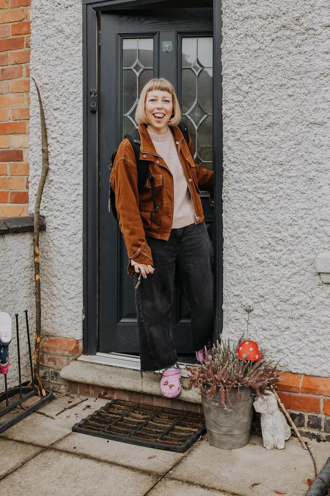
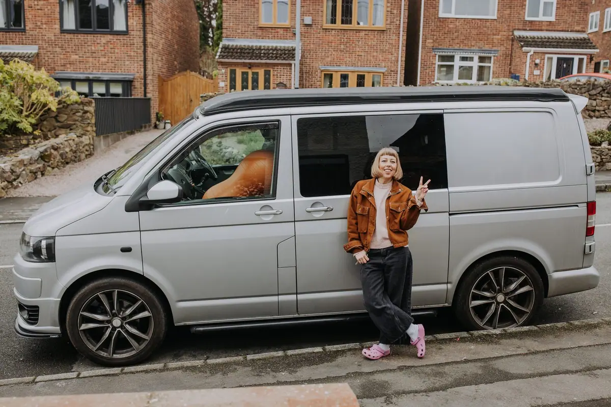

Meet Leanne
I'm Leanne (DipHb) — a mum of two Hypnobirth babies and a badass birth nerd! Hypnobirthing teacher, birth doula, Pregnancy & Postnatal yoga teacher, and 3 Step Rewind practitioner, proudly based in NW Leicestershire.


“Leanne is an amazing woman and she really is the best at her job.”
— Stephanie, birth doula client
Hi, I'm your doula!
I'm Leanne (DipHb), I am a mum of two Hypnobirth babies and a badass birth nerd! I am a proud no-nonsense hypnobirthing teacher, doula, Pregnancy/Postnatal yoga teacher and a 3 Step Rewind practitioner.
Born and raised in Leicestershire, I now reside in NW Leicestershire with my 2 daughters, my dogs Ron and Delphi and my cat Albus!
My core values are that everyone is entitled to person centred care, immeasurable support and education that means they can feel in control throughout their perinatal experiences.
Why I chose Hypnobirthing?
I first became interested in hypnobirthing when I started to research birth stories when I was expecting my first baby and found how positive it could be, much different to the scarefest I'd been treated to before this from everyone around me. I found a course, which I left feeling extremely informed, calm and confident about my birth. I found my passion, something I wanted others to feel, the ‘I CAN DO THIS’ moment.
I am a HUGE advocate for Hypnobirthing and want to help enable parents to have the birth they want, being aware of their choices through delivering a full antenatal programme.
Following working with 100's of families, I was regularly approached to attend births, which was something I'd always dreamt of. This led me to following my dreams to become a doula and now I absolutely adore what I do every day!
I am so proud to be rated as your 5 STAR Doula — by welcoming me as your Doula, I am a part of your birth team, to be on your side and by your side.
What you get with me
A fully unadulterated and interactive hypnobirthing antenatal course, from a birth nerd and advocate for empowered birth.
Full 121 support throughout the course pregnancy and 4th trimester, always on the end of a text or call!
Research and evidenced based knowledge specific to your needs and wishes.
Non-judgemental support and a realistic approach that's tailored to you.
A fierce advocate for you, if or when you need me to. You'll have me in your corner.
I am someone who has used the tools and techniques and has a huge support network of badass birth workers, so if there is something I don't know, I sure will do soon enough!
As a doula and someone who is part of a collective of birth workers, you won't get better support elsewhere.
I aim to be fully inclusive, and that means all births, all people!
If you are struggling to access the course, due to finances, or are in a marginalised group, please contact me to see how I can support you!
Birth is the one day in your life you will remember — you deserve to have the best experience possible and I truly believe that investing in my course will bring you SO much closer to the birth you deserve.
All resources, MP3's, parent handbook, birth plan, postnatal plan, printable affirmations and more.
Media & appearances
Featured discussing hypnobirthing techniques and the importance of birth preparation for expectant parents across the Midlands.
Regular contributor to local parenting publications and community events across Leicester and the wider Midlands region.
Speaker at pregnancy fairs, NCT events and maternity unit workshops — spreading the message about positive birth preparation.
Based in Leicestershire,
working across the Midlands
I'm based in North West Leicestershire and support families in person across Leicestershire, Northamptonshire, Derbyshire, Nottinghamshire, Warwickshire and Staffordshire — including Leicester, Loughborough, Coalville, Ashby-de-la-Zouch, Shepshed and the surrounding areas.
I travel around an hour for births. Not sure if you're within reach? Just get in touch and ask — the answer is usually yes.
Not local at all? Virtual support means we can still work together from anywhere in the UK or abroad.

Ready to work together?
Book a free 30-minute consultation and let's chat about how I can support you on your birth journey.
Book Free Consultation